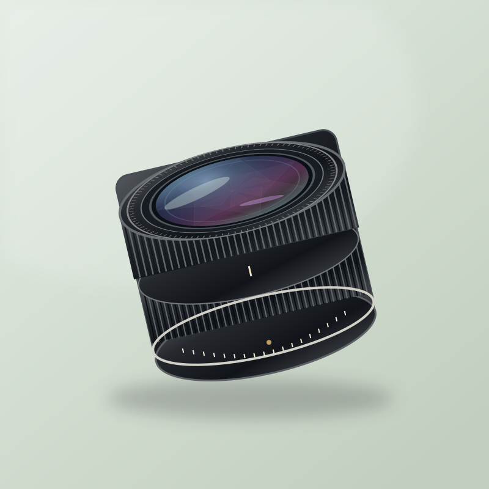

デモ用の商品イラストです。実物の写真ではありません。
レンズ DEMO ITEM
キヤノス FD 50mm F1.4 単焦点 マニュアルフォーカス レンズ 美品
¥12,500(例)
この商品で、AI出品を体験
コピーした URL を体験版の「AI出品」に貼り付けてください。
商品の状態
美品
カビ・くもり・バルサム切れなし。絞りの動作良好
- 出品者
- seller_demo_05評価 2,310(例) · 福岡県
- 発送元
- 福岡県
- 発送方法
- 梱包して発送(追跡・補償あり)
- 出品日
デモのため、購入・取引はできません。
商品説明
明るい標準レンズ(50mm F1.4)です。マニュアルフォーカス。
光にかざして確認しましたが、カビ・くもり・バルサム切れはありません。
絞りリングとピントリングは滑らかに動きます。絞り羽根に油じみはありません。
前玉に極小のクリーニングマークが 1 点あります(写りに影響なし)。
付属品: 前後キャップ。フードは付属しません。
※ 写真は実物とは別のデモ用の画像です。
商品情報
| ブランド | キヤノス(架空) |
|---|---|
| 型番 | FD 50mm F1.4 |
| 種類 | 単焦点・標準 |
| フォーカス | マニュアル |
| フィルター径 | 52 mm |
| 状態 | 美品 |
| 付属品 | 前後キャップ |
| 重さ | 約 0.23 kg(梱包後 約 0.45 kg の設定) |